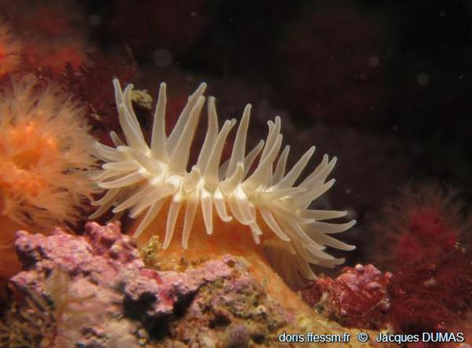

RECONNAÎTRE LES ANIMAUX MARINS ... pas si simple!
Cnidaires
Les Cnidaires regroupent méduses, gorgones, coraux et anémones. Leur nom vient de leurs cellules urticantes, les cnidocystes(en grec “cnidos” = ortie). On peut les trouver sous deux formes, fixés pour les polypes (coraux et anémones) et libres pour les méduses. Ils sont tous constitués au minimum d’une sorte de sac dans lequel se trouve le système digestif, d’une couronne de tentacules entourant une bouche.
Les cnidaires constituent un embranchement d'animaux aquatiques (essentiellement marins). Ils se retrouvent sous deux formes: lorsqu'ils sont fixés, on parle de polypes (c'est le cas du corail ou des anémones de mer), lorsqu'ils sont nageurs, alors ce sont des méduses. Certaines espèces alternent entre les deux formes.
Caractéristiques des cnidaires Les cnidaires existent depuis des centaines de millions d'années, au moins dès le Cambrien. Ils se caractérisent par la présence de cellules urticantes, appelées cnidocytes, qui libèrent leur venin au moindre contact. Le corps, très riche en eau, correspond à un sac au creux duquel se trouve une cavité gastrique, avec un seul orifice faisant à la fois office de bouche et d'anus, entouré d'une rangée de tentacules venimeux. Ces animaux se nourrissent de phytoplancton, de zooplancton et de petits animaux. Certains cnidaires sont dangereux pour l'Homme, comme la cuboméduse ou la rare Crambione cookii.
|  |